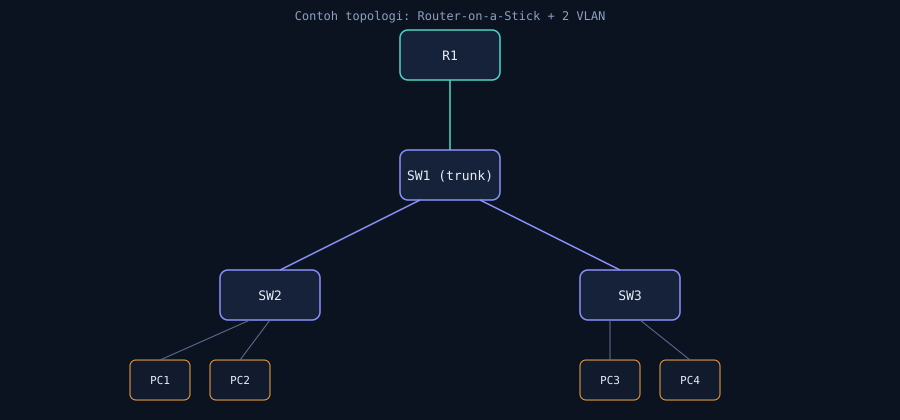

referensi — topology/
Panduan Desain Topologi
Rancang lab Packet Tracer yang rapi sebelum mulai ngetik CLI.
diagramContoh topologi Router-on-a-Stick

tipsMenyimpan file .pkt kamu
Taruh file Cisco Packet Tracer (.pkt) hasil kerja kamu langsung di folder
/cisco/topology/ dengan penamaan konsisten, contoh:
topology/
lab-01-basic.pkt
lab-02-vlan.pkt
lab-03-trunk.pkt
lab-04-intervlan.pkt
lab-05-dhcp.pkt
lab-06-acl.pkt
lab-07-routing.pkt
lab-08-troubleshooting.pkt